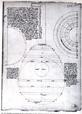
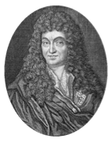
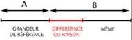
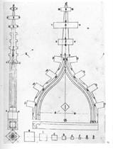

Que l’infinie diversité des organisations humaines ou naturelles dépende des seuls nombres entiers est une chose difficile à admettre aujourd’hui. L’esprit moderne conçoit mal quelle vérité les citations de Nycomaque et de bien d’autres ont jamais formulée. La signification réelle de ces concepts semble nous échapper.

Le dessin du luth par Henri-Arnaut de Zwolle rassemble les connaissances
nécessaires à la conception des instrument de musique. Ce dessin,
vraisemblablement une copie d'un modèle arabe plus ancien, doit être
considéré comme un "exempla géométrique" c'est-à-dire une figure servant
de support à l'enseignement oral de cet art.
De fait, dès le XVII° siècle, des intellectuels et artistes de plus en plus nombreux soutiennent que le simple « bon sens » conduit à des opinions tout à fait contraires à celles des anciens.
Cette question se trouve alors placée au cœur de la querelle dite « des anciens et des modernes ». Elle annonce en fait, une modernité où l’esthétique de l’art abandonne toute prétention rationnelle pour n’être plus soumise qu’aux seuls critères de la subjectivité. À cette époque, cette mise à l’écart de la rationalité va donc de pair avec une incompréhension croissante inhérente au mode de pensée même des promoteurs de la modernité. On n’est pas loin de considérer alors que les anciens ont raisonné « comme des casseroles » quand ils ont vu, entendu et prétendument mesuré, des relations entre le Nombre, le Beau et la Nature. De fait, la science naissante s’apprêtait à éclairer le siècle à venir d’une tout autre lumière. C’est donc au moment où s’opère cette fracture entre l’art et la science, que l’art ancestral de la mesure, se perd.

Claude Perraul, médecin et architecte, traducteur de Vitruve,
et frère de Charles fut une des acteurs de la querelle des anciens
et des modernes. Il fut un des premiers à mettre en doute
la valeur esthétique de la proportionnalité.
Les causes majeures du changement dans la représentation des choses « existantes ou à créer » tiennent à deux facteurs principaux. Il y a d’abord le bouleversement de la communication du savoir provoqué par l’imprimerie. Il s’agit là d’un véritable choc qui sape les fondations d’une société globalement organisée en fonction d'une transmission orale des savoirs. On ne peut non plus ignorer les progrès des mathématiques et particulièrement ceux de la numération et du calcul ayant engendré la mutation des concepts rattachés à la notion de mesures.
Autrefois, la définition philosophique de la notion d’unité était la clé de l’organisation et de la représentation des choses. En rattachant le nombre au caractère essentiel et indivisible de l’être, les anciens s’étaient représentés les relations de ce qui étaient comparables en fonction d’une évaluation de leurs « différences » qu’ils appelaient aussi « raison ».

Pour les anciens, la notion d'unité naturelle ne s 'applique pas
aux grandeurs telles que les distances: la notion de mesure découle
d'une comparaison de deux grandeurs propre à chaque objet.
Si les développements logiques issus de ces formulations mathématiques archaïques éprouvent les réflexes du cerveau contemporain, il demeure qu'elles sont à la base d'une part conséquente du discours philosophique et c’est seulement à partir d’elles que se dissipe l’apparente naïveté de la pensée pythagoricienne.

Hans Schuttermayer: la construction du pinacle et du gable à crochet:
une des premières tentatives pour expliquer la bonne
manière "d'extraire les mesures à partir
de la rotation du carré" (allias la section harmonique).
L’art de la mesure repose donc sur des concepts qui n’ont plus de réelle signification pour nous. Au début du XVII° siècle, la conception métrologique de la mesure qui est aujourd’hui la nôtre, commence à s’imposer condamnant à terme la représentation organique de la forme rattachée à la définition euclidienne de l’unité.
Le violon est un témoin inattendu de ce que fut l'art de la mesure pour les anciens. Il nous éclaire sur des modes de pensée restés longtemps inaccessibles .